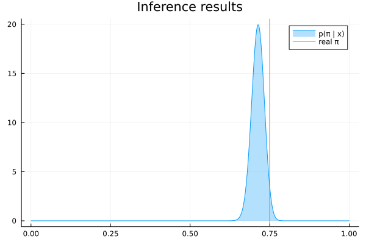

Creating your own custom nodes
A factor node is one factor of your model: a distribution, such as Bernoulli, or a function, such as +. RxInfer has many nodes, and a model outside them needs a node of your own. This tutorial builds one from nothing, runs inference with it, and checks the result against the exact answer.
A node is two things:
- a declaration, with
@define_factor_node: the node's name, its kind and its interfaces; - its rules, with
@define_message_update_rule: how the node computes each outgoing message from what arrives on its other edges.
For the free energy, a node also needs an average energy, with @define_average_energy. It needs a marginal rule, with @define_marginal_update_rule, for each cluster of several interfaces that its models form. These macros come from MessagePassingRulesBase, which RxInfer re-exports.
Read Understanding Rules first for what a rule is. To run inference with a custom distribution and no rules at all, see Inference without explicit message update rules.
Problem statement
Jane wants to know whether a coin is fair. She throws it $K$ times and records each outcome $x_k \in \{0, 1\}$, which she models with a Bernoulli distribution:
\[p(x_k \mid \pi) = \mathrm{Ber}(x_k \mid \pi) = \pi^{x_k} (1 - \pi)^{1 - x_k},\]
where $\pi \in [0, 1]$ is the probability of heads. Her prior belief about $\pi$ is a Beta distribution, $p(\pi) = \mathrm{Beta}(\pi \mid 4, 8)$, so her model is
\[p(x_{1:K}, \pi) = p(\pi) \prod_{k=1}^K p(x_k \mid \pi).\]
She wants the posterior $p(\pi \mid x_{1:K})$. RxInfer already has a Bernoulli node. This tutorial builds its own, MyBernoulli, and compares the two at the end.
Declare the node
A node is a type. An empty struct is enough. A constructor that returns the distribution gives the node a density, which a rule fallback evaluates where no rule applies (see Inference without explicit message update rules).
using RxInfer
struct MyBernoulli end
MyBernoulli(π::Real) = Bernoulli(π)
@define_factor_node(
node = MyBernoulli,
type = Stochastic,
interfaces = [:out, (:π, aliases = [:p])],
)The first interface, out, is the output: the $x_k$ of $\mathrm{Ber}(x_k \mid \pi)$. The second, π, also answers to p. Stochastic says the node is a density over its interfaces. A Deterministic node is a function, out = f(inputs...). The declaration draws itself:
MessagePassingRulesBase.nodespec(MyBernoulli)| interface | aliases | |
|---|---|---|
out | ||
π | p |
| default algorithm | DefaultAlgorithm() |
|---|---|
| static inputs | none |
| defined | create-node.md:60 |
In a model, you write the node as x ~ MyBernoulli(π), with its interfaces after the output in declaration order.
Which inputs a rule takes
A rule computes the message towards one interface, its target, from the other interfaces. What it receives from them depends on the factorization of the posterior. A rule takes the messages on the other interfaces of its target's cluster, and the marginals of the other clusters.
By default, RxInfer puts all random interfaces of a node in one cluster. Each observed variable and each constant is a cluster of its own. In Jane's model, out is observed, so MyBernoulli has the clusters (out) and (π):
| rule towards | takes | in Jane's model |
|---|---|---|
π | q[:out], the marginal of out | a point mass at the observed outcome |
out | q[:π], the marginal of π | a Beta, when you ask for a prediction of a missing outcome |
When out is a random variable in the same cluster as π, the rule towards out takes the message m[:π] instead. Rules that take messages do belief propagation. Rules that take marginals do variational message passing.
A message towards π
An observation $x$ is the likelihood $\mathrm{Ber}(x \mid \pi) = \pi^{x} (1 - \pi)^{1 - x}$, a function of $\pi$. Up to a constant, it is a Beta density:
\[\pi^{x} (1 - \pi)^{1 - x} = \tfrac{1}{2}\, \mathrm{Beta}(\pi \mid 1 + x, 2 - x), \qquad x \in \{0, 1\}.\]
@define_message_update_rule(
node = MyBernoulli,
target = :π,
args = (q[:out]::PointMass,),
logscale = -log(2),
body = (args) -> begin
x = mean(args.q[:out])
return Beta(1 + x, 2 - x)
end,
)
@call_message_update_rule(node = MyBernoulli, target = :π, q = (out = PointMass(1.0),))Result
| value | Beta{Float64}(α=2.0, β=1.0) |
|---|---|
| type | Beta{Float64} |
| log scale | -0.6931471805599453 (declared) |
Inputs
| edge | value | |
|---|---|---|
| out | q | PointMass{Float64}(1.0) |
Rule
| declared inputs | q[:out]::PointMass |
|---|---|
| algorithm | DefaultAlgorithm() |
| log scale | -0.6931471805599453 |
| defined | create-node.md:111 |
| body | args->begin
x = mean(args.q[:out])
return Beta(1 + x, 2 - x)
end |
q[:out]::PointMass reads as "the marginal of out, a point mass". The body receives the inputs as args, and args.q[:out] is that marginal. @call_message_update_rule runs the rule by hand, as the engine does, and returns a RuleResult. The card draws the node, the marginal the rule read as a dashed arrow, and the message it sent. getresult returns the message itself.
The logscale keyword states the logarithm of the constant the result leaves out, here $\log \tfrac{1}{2}$. This is the message's log scale. With logscales = true, RxInfer sums the log scales into the model's evidence, so a rule that declares one must state it correctly.
A marginal of out that is not a point mass, such as Bernoulli(p) under a mean-field factorization, gives the variational message $\exp \mathbb{E}_{q(x)}[\log \mathrm{Ber}(x \mid \pi)] = \pi^{p} (1 - \pi)^{1 - p}$:
@define_message_update_rule(
node = MyBernoulli,
target = :π,
args = (q[:out]::Any,),
body = (args) -> begin
p = mean(args.q[:out])
return Beta(1 + p, 2 - p)
end,
)
@call_message_update_rule(node = MyBernoulli, target = :π, q = (out = Bernoulli(0.7),))Result
| value | Beta{Float64}(α=1.7, β=1.3) |
|---|---|
| type | Beta{Float64} |
| log scale | undefined: the message rule for MyBernoulli towards :π under DefaultAlgorithm declares no `logscale` |
Inputs
| edge | value | |
|---|---|---|
| out | q | Bernoulli{Float64}(p=0.7) |
Rule
| declared inputs | q[:out]::Any |
|---|---|
| algorithm | DefaultAlgorithm() |
| log scale | none |
| defined | create-node.md:142 |
| body | args->begin
p = mean(args.q[:out])
return Beta(1 + p, 2 - p)
end |
Other rules for this target (1)
create-node.md:111| ✓ | algorithm DefaultAlgorithm |
| ✗ | q[:out]::PointMass got Bernoulli{Float64} |
Two rules share the target π. The types of the inputs select between them, as Julia's dispatch selects a method: a point mass selects the first rule, anything else the second. The second rule declares no logscale, so the log scale of its result is undefined.
A message towards out
The message towards out predicts an outcome. Under belief propagation, the rule integrates a Beta message $\mathrm{Beta}(\pi \mid \alpha, \beta)$ on π out:
\[\mu(x) = \int \mathrm{Ber}(x \mid \pi)\, \mathrm{Beta}(\pi \mid \alpha, \beta)\, \mathrm{d}\pi = \mathrm{Ber}\big(x \mid \tfrac{\alpha}{\alpha + \beta}\big).\]
Under variational message passing, the rule takes the marginal $q(\pi)$ and sends $\exp \mathbb{E}_{q(\pi)}[\log \mathrm{Ber}(x \mid \pi)]$. This is a Bernoulli distribution whose odds of heads are $\exp \mathbb{E}[\log \pi] / \exp \mathbb{E}[\log(1 - \pi)]$.
@define_message_update_rule(
node = MyBernoulli,
target = :out,
args = (m[:π]::Beta,),
logscale = 0,
body = (args) -> Bernoulli(mean(args.m[:π])),
)
@define_message_update_rule(
node = MyBernoulli,
target = :out,
args = (q[:π]::Any,),
body = (args) -> begin
ρ₁ = mean(log, args.q[:π]) # E[log π]
ρ₀ = mean(mirrorlog, args.q[:π]) # E[log(1 - π)]
return Bernoulli(exp(ρ₁) / (exp(ρ₁) + exp(ρ₀)))
end,
)
@call_message_update_rule(node = MyBernoulli, target = :out, m = (π = Beta(4.0, 8.0),))Result
| value | Bernoulli{Float64}(p=0.333333) |
|---|---|
| type | Bernoulli{Float64} |
| log scale | 0 (declared) |
Inputs
| edge | value |
|---|
Rule
| declared inputs | m[:π]::Beta |
|---|---|
| algorithm | DefaultAlgorithm() |
| log scale | 0 |
| defined | create-node.md:174 |
| body | args->Bernoulli(mean(args.m[:π])) |
Other rules for this target (1)
create-node.md:182| ✓ | algorithm DefaultAlgorithm |
| ✗ | q[:π]::Any not provided |
| ✗ | m[:π]::Beta{Float64} provided but not consumed |
The first rule declares logscale = 0 because the prediction is already normalized. With a marginal in place of the message, the second rule runs:
@call_message_update_rule(node = MyBernoulli, target = :out, q = (π = Beta(4.0, 8.0),))Result
| value | Bernoulli{Float64}(p=0.31875) |
|---|---|
| type | Bernoulli{Float64} |
| log scale | undefined: the message rule for MyBernoulli towards :out under DefaultAlgorithm declares no `logscale` |
Inputs
| edge | value | |
|---|---|---|
| π | q | Beta{Float64}(α=4.0, β=8.0) |
Rule
| declared inputs | q[:π]::Any |
|---|---|
| algorithm | DefaultAlgorithm() |
| log scale | none |
| defined | create-node.md:182 |
| body | args->begin
ρ₁ = mean(log, args.q[:π])
ρ₀ = mean(mirrorlog, args.q[:π])
return Bernoulli(exp(ρ₁) / (exp(ρ₁) + exp(ρ₀)))
end |
Other rules for this target (1)
create-node.md:174| ✓ | algorithm DefaultAlgorithm |
| ✗ | m[:π]::Beta not provided |
| ✗ | q[:π]::Beta{Float64} provided but not consumed |
rule_coverage tabulates what the node can compute so far:
MessagePassingRulesBase.rule_coverage(MyBernoulli)| DefaultAlgorithm | |
|---|---|
| → out | ✓×2 |
| → π | ✓×2 |
The average energy
infer reports the Bethe free energy with free_energy = true. It needs each node's average energy: the expected negative log-density of the node under the marginals of its clusters. For MyBernoulli,
\[U = -\mathbb{E}_{q(x)}[x]\, \mathbb{E}_{q(\pi)}[\log \pi] - \big(1 - \mathbb{E}_{q(x)}[x]\big)\, \mathbb{E}_{q(\pi)}[\log(1 - \pi)].\]
mean(mirrorlog, q) computes $\mathbb{E}_q[\log(1 - \pi)]$:
@define_average_energy(
node = MyBernoulli,
args = (q[:out]::Any, q[:π]::Any),
body = (args) -> begin
x, π = args.q[:out], args.q[:π]
return -mean(x) * mean(log, π) - (1 - mean(x)) * mean(mirrorlog, π)
end,
)
@call_average_energy(node = MyBernoulli, q = (out = PointMass(1.0), π = Beta(4.0, 8.0)))Result
| value | 1.18654 |
|---|---|
| type | Float64 |
Inputs
| edge | value | |
|---|---|---|
| out | q | PointMass{Float64}(1.0) |
| π | q | Beta{Float64}(α=4.0, β=8.0) |
Rule
| declared inputs | q[:out]::Any, q[:π]::Any |
|---|---|
| algorithm | DefaultAlgorithm() |
| defined | create-node.md:223 |
| body | args->begin
(x, π) = (args.q[:out], args.q[:π])
return -(mean(x)) * mean(log, π) - (1 - mean(x)) * mean(mirrorlog, π)
end |
The energy takes one marginal per cluster, q[:out] and q[:π], which are the clusters of Jane's model.
Joint marginals
When out is a random variable in the same cluster as π, the cluster (out, π) has a joint marginal. The free energy then needs a rule for that marginal, and an average energy over q[:out, :π]. A marginal rule takes the messages on the cluster's members. When the message on out is a point mass, the joint factorizes into that point mass and the product of the likelihood with the message on π. The rule returns the two blocks as a FactorizedCluster:
@define_marginal_update_rule(
node = MyBernoulli,
target = (:out, :π),
args = (m[:out]::PointMass, m[:π]::Beta),
body = (args) -> begin
x = mean(args.m[:out])
likelihood = Beta(1 + x, 2 - x)
return FactorizedCluster(
(:out,) => args.m[:out],
(:π,) => prod(PreserveTypeProd(Distribution), likelihood, args.m[:π]),
)
end,
)
@call_marginal_update_rule(
node = MyBernoulli, target = (:out, :π),
m = (out = PointMass(1.0), π = Beta(4.0, 8.0)),
)Result
| value | FactorizedCluster((:out,) => PointMass{Float64}(1.0), (:π,) => Beta{Float64}(α=5.0, β=8.0)) |
|---|---|
| type | FactorizedCluster{((:out,), (:π,)), FactorizedJoint{Tuple{PointMass{Float64}, Beta{Float64}}}} |
Inputs
| edge | value |
|---|
Rule
| declared inputs | m[:out]::PointMass, m[:π]::Beta |
|---|---|
| algorithm | DefaultAlgorithm() |
| defined | create-node.md:248 |
| body | args->begin
x = mean(args.m[:out])
likelihood = Beta(1 + x, 2 - x)
return FactorizedCluster((:out,) => args.m[:out], (:π,) => prod(PreserveTypeProd(Distribution), likelihood, args.m[:π]))
end |
prod(PreserveTypeProd(Distribution), …) multiplies the two Beta densities in closed form. Jane's model never forms this cluster, because out is observed. The rule serves models in which out is random.
Use the node in a model
Jane throws the coin 500 times. The true probability of heads is 0.75:
using StableRNGs
π_real = 0.75
dataset = float.(rand(StableRNG(42), Bernoulli(π_real), 500))The model uses MyBernoulli like any other node:
@model function coin_model_mybernoulli(y)
π ~ Beta(4.0, 8.0)
for i in eachindex(y)
y[i] ~ MyBernoulli(π)
end
end
result = infer(
model = coin_model_mybernoulli(),
data = (y = dataset,),
free_energy = true,
)
result.posteriors[:π]Beta{Float64}(α=365.0, β=147.0)Each rule towards π took a point mass. The engine multiplied the prior with the 500 Beta messages that the rules sent.
Compare with the exact answer
The Beta prior is conjugate to the Bernoulli likelihood, so the posterior has a closed form: $\mathrm{Beta}(4 + k, 8 + K - k)$, where $k$ is the number of heads.
k, K = count(==(1), dataset), length(dataset)
exact = Beta(4 + k, 8 + K - k)
result.posteriors[:π] == exacttrueOn a tree-shaped model under belief propagation, the Bethe free energy equals the negative log evidence, $-\log p(x_{1:K})$. Bayes' rule gives the evidence at any value of $\pi$: $p(x_{1:K}) = p(\pi)\, p(x_{1:K} \mid \pi) / p(\pi \mid x_{1:K})$.
π₀ = 0.5
log_evidence = logpdf(Beta(4.0, 8.0), π₀) + sum(y -> logpdf(Bernoulli(π₀), y), dataset) - logpdf(exact, π₀)
(free_energy = last(result.free_energy), negative_log_evidence = -log_evidence)(free_energy = 301.1871283724147, negative_log_evidence = 301.1871283724222)The two agree, so the rules and the average energy are right. The log scales give the same number. With logscales = true, the log scale of the posterior is the log evidence, built from the -log(2) that each rule towards π declares:
result_logscales = infer(
model = coin_model_mybernoulli(),
data = (y = dataset,),
logscales = true,
)
getlogscale(result_logscales.posteriors[:π]) ≈ log_evidencetrueThe built-in Bernoulli node gives the same posterior:
@model function coin_model(y)
π ~ Beta(4.0, 8.0)
for i in eachindex(y)
y[i] ~ Bernoulli(π)
end
end
result_bernoulli = infer(model = coin_model(), data = (y = dataset,))
result_bernoulli.posteriors[:π] == result.posteriors[:π]trueThe plot shows the posterior and the true value:
using Plots
plot(range(0, 1, length = 1000), (x) -> pdf(result.posteriors[:π], x);
fillalpha = 0.3, fillrange = 0, label = "p(π | x)", title = "Inference results")
vline!([π_real], label = "real π")
Rules that read the node
A rule can read services from its caller. A service is a value the rule needs from whoever runs it, rather than an input from its edges. The engine supplies three: the factor node itself (node), a random number generator (rng) and a matrix correction strategy (matrix_correction). A rule declares the services it reads with the ctx keyword and reads each one as ctx.name. See The rule context for the details.
The rule below reads the node, finds the variable on the node's θ interface, and uses that variable's latest marginal:
using RxInfer
struct MyExperimentalNode end
@define_factor_node(node = MyExperimentalNode, type = Stochastic, interfaces = [:out, :θ])
@define_message_update_rule(
node = MyExperimentalNode,
target = :θ,
args = (q[:out]::Any,),
ctx = (:node,),
body = (ctx, args) -> begin
node = ctx.node
θ = ReactiveMP.getvariable(ReactiveMP.getinterface(node, ReactiveMP.interfaceindex(node, :θ)))
qθ = Rocket.getrecent(ReactiveMP.get_stream_of_marginals(θ))
return NormalMeanVariance(mean(qθ) + mean(args.q[:out]), var(qθ))
end,
)
which_message_update_rule(MyExperimentalNode, :θ; q = (out = PointMass(1.0),))| inputs | q[:out]::Any |
|---|---|
| in-place | no |
| scratch | no |
| pure | yes |
| services | node |
| log scale | none |
| defined | create-node.md:387 |
| body | (ctx, args)->begin
node = ctx.node
θ = ReactiveMP.getvariable(ReactiveMP.getinterface(node, ReactiveMP.interfaceindex(node, :θ)))
qθ = Rocket.getrecent(ReactiveMP.get_stream_of_marginals(θ))
return NormalMeanVariance(mean(qθ) + mean(args.q[:out]), var(qθ))
end |
which_message_update_rule finds the rule that a call would run, without running it, and lists the services the rule declares. The body names the ctx slot before args. ctx.node is the engine's factor node, and ReactiveMP's accessors reach its interfaces and variables.
The engine supplies node, so the rule runs in a model:
@model function my_experimental_model(y)
θ ~ Normal(mean = 0.0, variance = 1.0)
y ~ MyExperimentalNode(θ)
end
result = infer(
model = my_experimental_model(),
data = (y = 1.0,),
initialization = @initialization(q(θ) = NormalMeanVariance(3.14, 2.71)),
)
result.posteriors[:θ]NormalWeightedMeanPrecision{Float64}(xi=1.5276752767527677, w=1.3690036900369003)A call by hand has no engine, so it supplies no node, and ctx.node reads as nothing inside the rule.
A rule can also declare a service of its own, which the model's user supplies with the context option of infer. This rule reads the variance of its message from a service named spread:
struct Spread end
@define_factor_node(node = Spread, type = Stochastic, interfaces = [:out, :θ])
@define_message_update_rule(
node = Spread,
target = :θ,
args = (q[:out]::PointMass,),
ctx = (:spread,),
body = (ctx, args) -> NormalMeanVariance(mean(args.q[:out]), ctx.spread),
)
@model function spread_model(y)
θ ~ Normal(mean = 0.0, variance = 1.0)
y ~ Spread(θ)
end
result = infer(
model = spread_model(),
data = (y = 1.0,),
options = (context = (spread = 2.0,),),
)
result.posteriors[:θ]NormalWeightedMeanPrecision{Float64}(xi=0.5, w=1.5)The engine checks the declared services when it sets up a node, so a service that nobody supplies is an error before inference starts:
try
infer(
model = spread_model(),
data = (y = 1.0,),
)
catch err
showerror(stdout, err)
endArgumentError: the message rule for Spread towards :θ under DefaultAlgorithm needs the context service :spread, which its context does not supply; supply it in the context the rule is called with: ReactiveMP's activation option `context = (name = value, ...)`, RxInfer's `infer(...; options = (context = (name = value, ...),))`, or a call's `ctx = (name = value, ...)`A rule that reads the graph through the node depends on the engine's internals and on the order in which the engine updates marginals. Prefer the inputs a rule declares in args, and read the node only when no input carries what the rule needs.
Next steps
- MessagePassingRulesBase's tutorials build nodes step by step and test each rule by hand: Your first node, A deterministic node with a group and A node with its own algorithm.
- The Keyword reference lists every keyword of every macro on this page.
- Algorithm specification shows how a model chooses the algorithm that a node's rules run under.